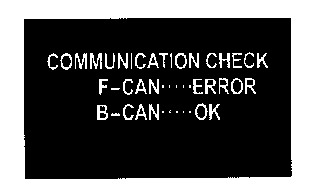

Initial Inspection and Diagnostic Overview
Self-diagnostic FunctionBefore troubleshooting the gauge system, refer to multiplex integrated control system B-CAN System Diagnosis Test Mode A.
The gauge control module has a self-diagnostic function.
- The beeper drive circuit check.
- The indicator drive circuit check.
- The switch input test.
- The LCD segments check.
- The gauges drive circuit check (speedometer, tachometer, fuel gauge, coolant temperature gauge).
- The communication line check (of the body-controller area network (B-CAN) communication line and the fast-controller area network (F-CAN) communication line between the gauges).
NOTE: Indicators are also controlled via the communication line.
Entering the self-diagnostic function
Before doing the self-diagnostic function, check the No. 7 (10 A) fuse and the No. 21 (7.5 A) fuse in the under-dash fuse/relay box.
1. Push and hold the SEL RESET button.
2. Turn the headlights ON.
3. Turn the ignition switch ON (II).
4. Within 5 sec, turn the headlights OFF, then ON and OFF again.
5. Within 5 sec, release the SELECT button, and then push and release the button three times repeatedly.
NOTE:
- While in the self-diagnostic mode, the dash lights brightness controller operates normally.
- While in the self-diagnostic mode, the SELECT button is used to start the Beeper Drive Circuit Test and the Gauge Drive Circuit Check.
- If the vehicle speed exceeds 1.2 mph (2 km/h) or the ignition switch is turned OFF, the self-diagnostic mode ends.
The Indicator Drive Circuit Check
When entering the self-diagnostic mode, these indicators blink:
ABS indicator, active damper system indicator, A/T gear position indicator, brake system indicator, charging system indicator, cruise control indicator, cruise main indicator, DRL indicator, fog light indicator, high beam indicator, immobilizer indicator, lights-on indicator, low fuel indicator, malfunction indicator lamp (MIL), message indicator, oil pressure indicator, seat belt indicator, security indicator, SH-AWD indicator. Side airbag indicator, tire pressure indicator, VSA activation indicator, and VSA indicator.
Switch Input Check
After the intermittent beeper sounds at the initial stage of self-diagnosis, a beeper sounds continuously while any of the following switch inputs are switched from OFF to ON:
Parking brake switch, VSA OFF switch, comfort switch, cruise control master, SET, RESUME, CANCEL switches, select, previous, next switches, and dash lights brightness controller (VOL (+), VOL ( - )).
The Beeper Drive Circuit Check
When entering the self-diagnostic mode, the beeper sounds five times.
The LCD [Sport shift and multi-information display (MID)] Segment Check
When entering the self-diagnostic mode, the word "Checking Now" shows on the MID.
The Gauge Drive Circuit Check
When entering the self-diagnostic mode, the speedometer, the tachometer, the fuel gauge, and the coolant temperature gauge needles sweep from the minimum position to maximum position, then return to the minimum position.
NOTE:
- After the beeper stops sounding and the gauge needles return to the minimum position, pushing the select/reset button starts the Beeper Drive Circuit Check (one beep) and the Gauge Drive Circuit Check again.
- The check cannot be started again until the gauge needles return to the minimum position.
If any needle fails to sweep or the beeper does not sound, replace the gauge control module.
The Communication Line Check
While in the self-diagnostic mode, the Communication Line Check starts after the LCD Segment Check.
If the communication line is OK, the word "OK" will be indicated on the multi-information display (MID). If there is a communication line error, the word "NG" will be indicated on the MID.
Indication pattern

There is a malfunction in the communication line between the F-CAN and gauge control module. The B-CAN is OK at this time. Check for DTCs in the PCM and troubleshoot any DTCs found. If no DTCs are found, go to B-CAN System Diagnosis Test Mode A.
There is a malfunction in the communication line between the B-CAN and gauge control module. The F-CAN line is OK at this time. Go to B-CAN System Diagnosis Test Mode A.
There is a malfunction in the communication line between the gauge control module and F-CAN and B-CAN. Check for DTCs in the PCM and troubleshoot any DTCs found. If no DTCs are found, go to B-CAN System Diagnosis Test Mode A.
Ending the self-diagnostic function
Turn the ignition switch OFF.
NOTE: If the vehicle speed exceeds 1.2 mph (2 km/h), the self-diagnostic function ends.